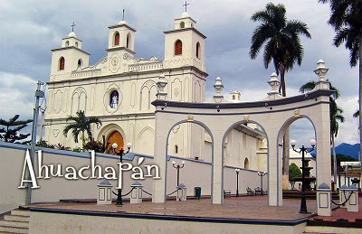
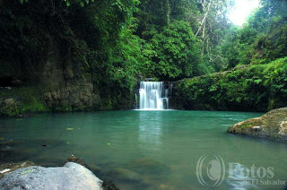

El departamento de Ahuachapán es el más occidental de los 14 departamentos en los que está dividida la República de El Salvador. Su cabecera, la ciudad de Ahuachapán se encuentra a 100 km de San Salvador (capital de la república). El departamento tiene una extensión de 1.239,60 km². Colinda al norte con el departamento de Santa Ana , al noreste y al este con el departamento de Jutiapa de Guatemala, al sur con el Océano Pacífico y al oeste con el departamento de Sonsonate.
El municipio de Ahuachapán es la capital del departamento de Ahuachapán y una de las ciudades más importantes de la zona occidental de El Salvador.
Ahuachapán fue fundado en el siglo V por indios mayas de la tribu pokomames, y sometida en el siglo XV por belicosos pipiles de los izalcos. Gradualmente la región fue invadida por los blancos.
El 11 de febrero de 1862 obtuvo su título de ciudad por una orden legislativa publicada en la "Gaceta Oficial" del 22 de febrero de 1862.4
El 9 de febrero de 1869 obtuvo el título de capital departamental.
Ahuachapán cuenta con varios sitios turísticos, como por ejemplo Los Ausoles, Laguna el Espino,5 las Lagunas del Llano y de Morán o los saltos de Atehuecillas y de Malacatiupán. Dentro de los puntos de interés en la ciudad, se cuenta con la Plaza Mayor, constituida por el Parque Central, conocido como Parque La Concordia, el edificio de la Alcaldía, moderna estructura con un cierto aire de "art deco", reconstruida en la década de los 50´s, la Iglesia de "La Parroquia de La Asunción", hermosa edificación de estilo colonial con más de 100 años de antigüedad, y el nuevo punto de la ciudad, el "Pasaje La Concordia". contiguo a la Iglesia. El Pasaje fue recientemente rescatado y remodelado por la Alcaldía de la localidad, siendo una hermosa área peatonal con preciosos y coloridos [murales], una bellísima fuente luminosa que hace las delicias de las familias que desean descansar o simplemente "ver pasar gente", o tomar una deliciosa taza de "café de altura", cultivado en las fincas aledañas (calidad de exportación), acompañado de un delicioso postre o croissant, muffin o algún platillo típico en cualquiera de los pequeños restaurantes, cafés y hostales de los alrededores, los cuales son ideales para conocer la ciudad a pie o a bordo de un "torito" -pequeños vehículos motorizados tipo taxi que acomodan 2 o 3 personas.
